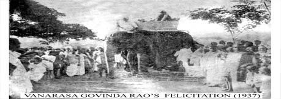

Surabhi Estd. 1885
The legacy of Surabhi Theatre began in on 1885 in the village called Surabhi, Rayachot thaluka, Kadapa Dist., Andhra Pradesh.
Vanarasa Govinda Rao's Felicitataion
The couple Smt. and Sri Rekandar Subhadramma and Chinna Venkatrao founded Sri Venkateswara Natyamandali. After the first generation, the organization led by their sons Rekandar Dasaradhi Rao, then by Bhojaraju. And, R.Nageswara Rao(Babji) is leading the organization. After that sixth genaration of Surabhi Jayachandra Varma (Grand son of Bhojaraju garu) started a group name as Sri Venkateswara Surabhi theatre, continuing the legacy of surabhi from his grandfather Padmashri Surabhi Babji Garu
Nataka Kala Praveena Smt. Rekandar Subhadramma and Sri China Venkatrao.
Smt. Rekandar Subhadramma(1912-1982), daughter of Vanarasa Govinda Rao and Lakshmamma, was born in Vijayawada, Andhra Pradesh. She started her earlier education of acting at her father Vanarasa Govinda Rao. She entered the stage in her 6th year and continued the expedition for 50 years. She grew to the excellence of acting as she accompanied the troupe when they travelled to Rangoon and Burma.
She got married to Rekandar Chinna Venkat Rao in 1926,she exhibited her extraordinary skill as an actress who could play both male and female roles with unusual ease. The popular roles are Sri Rama in Lavakusa, Balarama and Dhuryodhana in Kurukshetram, Yama in Sati Savitri, Vengalaraya in Bobbili Yuddham, Anjaneya in Lanka Dahanam, the title roles in the plays Balanagamma, Harishchandra, Sati Anasuya, Chintamani, and many more. All these roles demanded Angika, Vachika and Satvika – the elements of virtuosity in a balanced proportion and Subhadramma had equipped herself well in all these areas of theatrical exposition and gained a name for her excellent acting abilities.
Besides, Subhadramma was also known to be an able instructor. Happily she took up the responsibility of training actors and actresses of her company and did justice to it with great elan. Because of her inimitable rendering of poems with a stress on the bhava and her mellifluous singing, she was regarded as one of the topmost actresses of her time.
Subhadramma was honored by several associations including Andhra Nataka Kala Parishad and was bestowed with titles, Nataka Kalapraveena by Govt. of Andhra Pradesh, Kaladheera and Gana kala Saraswathi for her exceptional acting prowess. She was also one of the early singer actors whose gram phone records were famous.
Smt & Sri Subhadramma, Chinavenkatrao Subhadramma(D/O Vanarasa Govindarao)
Sri Rekandar Dasaradhi Rao
Rekandar Dasaradhi Rao, first son of Sri Rekandar China Venkata Rao and Nataka Kala Praveena smt. Subhadramma, was born on 6th November 1927. He was famous for his child roles. He became the Harmonist (The key musician of the Surabhi drama) in his 15th year. He undertook the reigns of the group after her mother and able to ran the group successfully. He was famous for his performances Kanaka Senudu in kanaka Tara, Talari Ramudu in Balanagamma, Bussi and Dwibhashi-Laxmana in Bobbili Yuddham, and Nakshatraka in Harishandra.
Rekandar Bhoja Raju, second son of Rekandar China Venkata rao and Nataka Kala Praveena smt. Subhadramma, was born on 11th October 1929 at Piduguralla Village, Guntur District of Andhra Pradesh. He was renewed for his versatile skills regarding the stage.
Bhoja Raju was a born all-rounder, who was equipped with rare mastery for doing comic and ferocious roles. His portrayals of Dhuryodhana, Ghatotkacha, Hiranya Kasipa and Kamsa on one side and his comic roles of Subbi setty in chintamani and the thief in Kanthamathi on the other earned him the encomiums of audience and literati alike.
Bhoja Raju was a great technician in all the fields – he was a wig-maker, molder, scenic painter, electrician, lighting expert, engine mechanic, besides being harmonist and Tabla player. Bhoja Raju was died in 2005 at Visakhapatnam while performing the role Mayala Marati in Balanagamma.
Sri Rekandar Bhojaraju (Depiction of Bussi in Bobbili Yuddham)
Rekandar Nageswararao (Babji)
Padmashri Rekandar Nageswararao, popularly known as Surabhi Babji, He is the one who made the Surabhi's popularity to streach accross the nation and abroad.The Sangeeth Natak Acadamy-New Delhi respected him with the National Award in the field of Theatre.